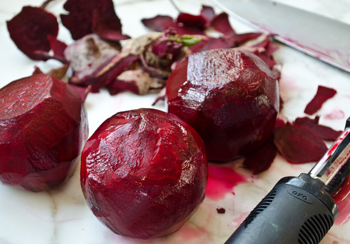
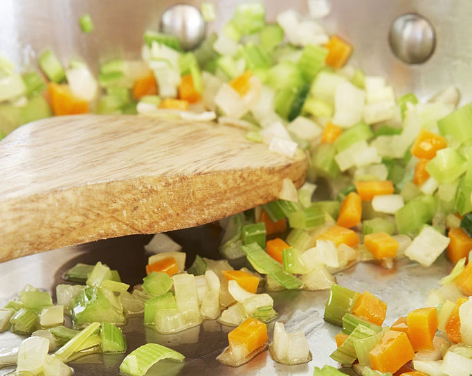
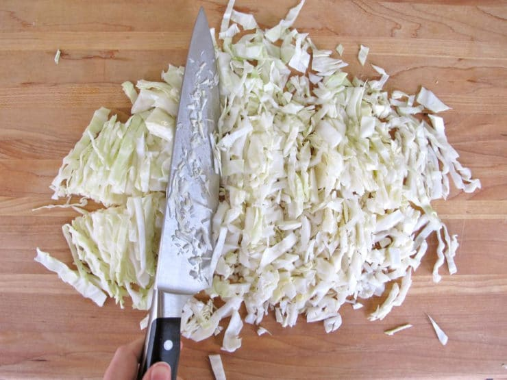

Yield 12 servings
Time 2.5 hrs
- Beef or Pork, 2 pounds
- 1 14.5 oz can of diced tomatoes
- 4 young beets, with tops
- 3 carrots, thinly sliced or grated
- 2 stalks celery, thinly sliced or grated
- 1 medium onion, diced
- 1/4 head of green cabbage, shredded
- 4 cups water, boiling
- Salt (or bullion), to taste
- Paprika, to taste
- Dredge meat in seasoned flour and brown in stock pot
- Add tomatoes (with juice) and water
- Bring to a boil, then cover and simmer
- Separate beets from tops, peel beets, slice and throw them in the pot
- Sauté the onion, clerey and carrots; throw them in the pot
- Shred the cabbage; throw it in the pot
- Chop up the beet greens, then add them to the pot
- Simmer a total of 2 hours from when the meat first started to simmer (or until the meat is done)
- Add salt and paprika, to taste
- Serve with dill and sour cream

Enjoy!